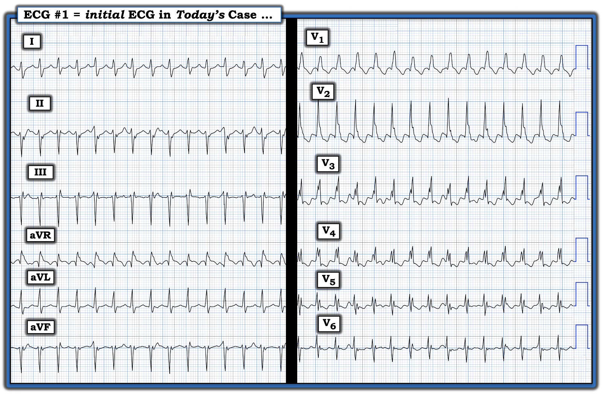
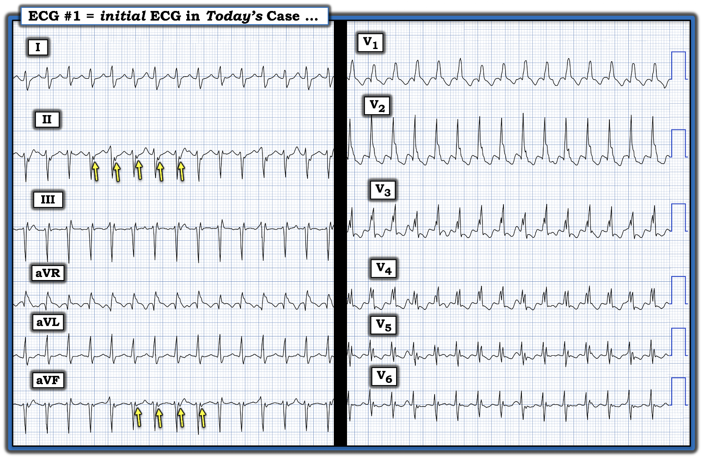
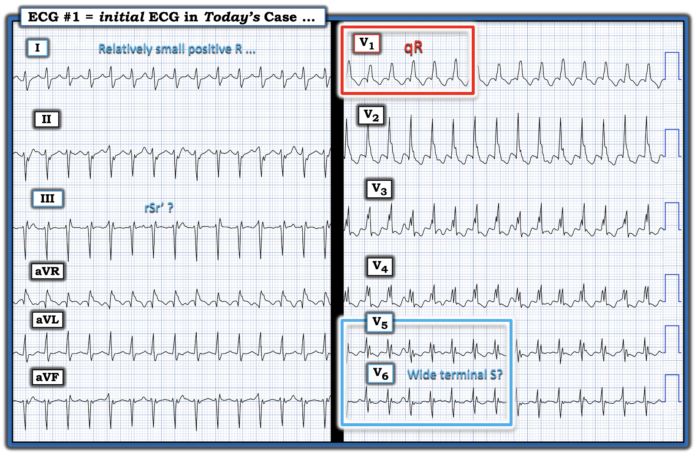
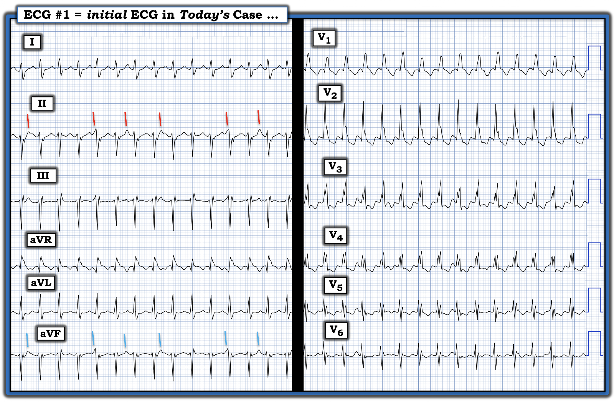
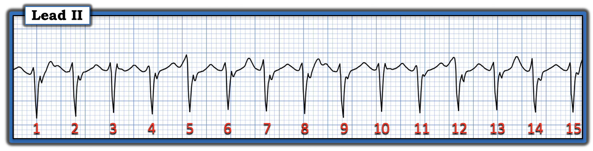
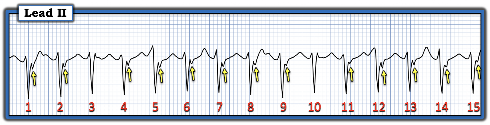
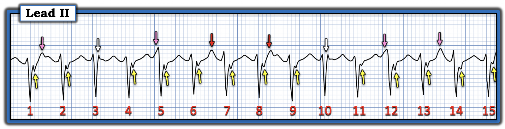
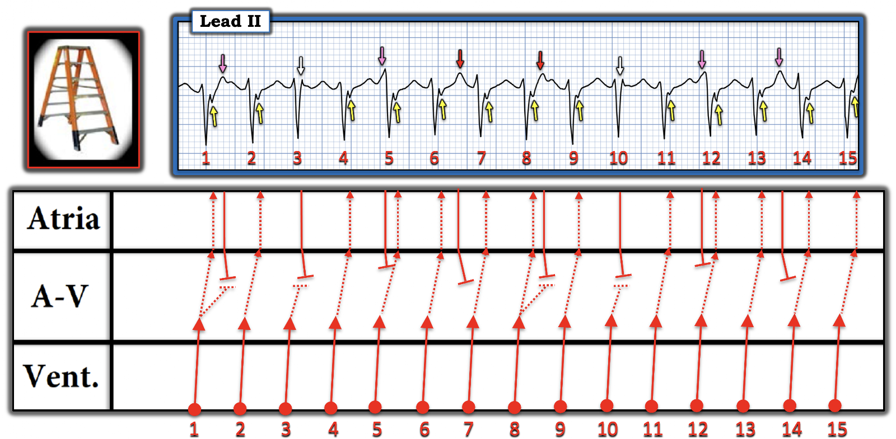
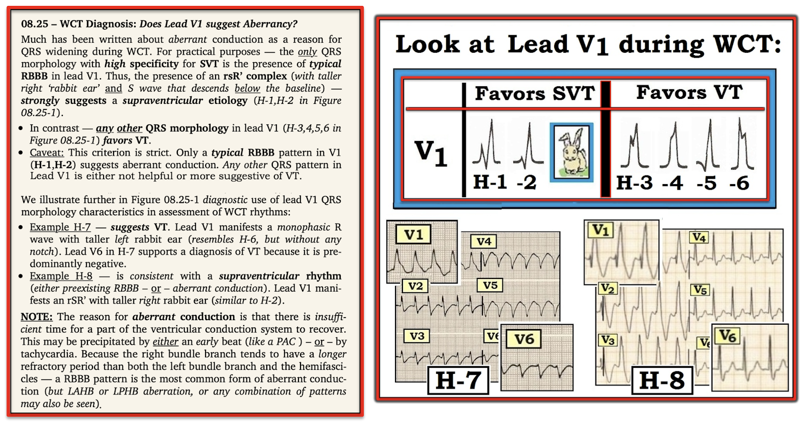

ECG Blog #539 — SVT có gây tụt huyết áp không?
Điện tâm đồ ở Hình 1 được ghi từ một phụ nữ trẻ — có tiền sử SVT tái phát. Ở cơn gần đây nhất này, cô bị tụt huyết áp.
CÂU HỎI:
- Bạn sẽ diễn giải điện tâm đồ ở Hình 1 như thế nào?
- Bản ghi này có "khớp" với tiền sử của bệnh nhân không?
- Điểm cộng: Có bằng chứng về hoạt động nhĩ nền không?


Ôn lại một số khái niệm lâm sàng:
Điện tâm đồ ở Hình 1 cho thấy một WCT đều (nhịp nhanh QRS rộng – Wide-Complex Tachycardia) với tần số ~180-190/phút.
- Mặc dù ở một số chuyển đạo chi QRS có vẻ không rộng — nó "trông" rộng ở hầu hết các chuyển đạo ngực, và đo được 0.11-0.12 giây ở các chuyển đạo V1,V2.
- ĐIỂM THEN CHỐT (PEARL) #1: Tôi đã gặp nhiều câu trả lời khác nhau về việc thế nào là "QRS giãn rộng" ở người lớn. Tôi ưu tiên 2 nguyên tắc sau: i) Để đo thời gian QRS — Hãy dùng chuyển đạo mà ở đó bạn xác định rõ được điểm khởi đầu và điểm kết thúc của phức bộ QRS — và ở đó QRS dài nhất; — và, ii) Vì một số ca VT phân nhánh (fascicular VT) có thể chỉ đo được 0.11 giây — tôi coi QRS là "rộng" nếu ở bất kỳ chuyển đạo nào QRS đo được rõ ràng ≥0.11 giây. Và cách dễ để biết thời gian QRS có ≥0.11 giây hay không — là xác định xem thời gian QRS có rõ ràng lớn hơn 1/2 ô lớn hay không (tức là, Mỗi ô lớn trên giấy kẻ ô điện tâm đồ = 0.20 giây ==> 1/2 ô lớn = 0.10 giây, và nếu QRS dài hơn mức này — thì theo định nghĩa của tôi là rộng!).
- ĐIỂM THEN CHỐT (PEARL) #2: Một chẩn đoán được ghi trong hồ sơ bệnh án — không nhất thiết có nghĩa là chẩn đoán đó đúng (trừ khi bạn cũng tìm thấy bằng chứng khách quan chắc chắn trong hồ sơ của bệnh nhân ủng hộ chẩn đoán đó!). Chúng ta cần luôn để ngỏ những khả năng khác. Vì vậy, trong ca hôm nay — tôi không hoàn toàn chấp nhận "tiền sử SVT tái phát" trước đó — vì tôi không được xem bất kỳ điện tâm đồ nào trước đây ghi nhận rằng cơn nhịp nhanh đã biết thực sự là trên thất.
- ĐIỂM THEN CHỐT (PEARL) #3: Hiện vẫn còn quá phổ biến quan niệm cho rằng nguyên nhân của tuyệt đại đa số nhịp WCT đều ở người lớn trẻ tuổi là một dạng nào đó của SVT (nhịp nhanh trên thất – SupraVentricular Tachycardia) — trong đó QRS giãn rộng được giải thích bởi BBB (blốc nhánh – Bundle Branch Block) có sẵn từ trước hoặc dẫn truyền lệch hướng. Tuy nhiên, như đã trình bày trong ECG Blog #489 — Blog #38 — và Blog #464, cùng nhiều bài khác — các VT vô căn (xảy ra ở bệnh nhân không có bệnh tim nền) phổ biến ở người lớn trẻ tuổi hơn nhiều so với nhận thức hiện nay (Bàn thêm về các VT vô căn ở PHẦN BỔ SUNG của bài hôm nay bên dưới).
ĐIỂM THEN CHỐT (PEARL) #4: Bệnh nhân hôm nay bị tụt huyết áp kèm theo nhịp ở Hình 1. Mặc dù rõ ràng bệnh nhân đang trong cơn VT thường bị tụt huyết áp hơn (so với bệnh nhân đang trong nhịp SVT) — huyết áp (BP – blood pressure) của bệnh nhân không phải là yếu tố dự báo chắc chắn để phân biệt VT với SVT (Xem ECG Blog #220 — Blog #38 — và Blog #297). Ví dụ:
- Chúng tôi đã gặp một số bệnh nhân VT bền bỉ vẫn ổn định huyết động không chỉ trong nhiều giờ — mà trong nhiều ngày!
- Ngược lại, phần lớn người lớn trẻ tuổi vốn khỏe mạnh đến viện trong nhịp SVT bền bỉ — sẽ duy trì ổn định trong thời gian dài.
- ĐIỀU CỐT LÕI: Việc bệnh nhân hôm nay tụt huyết áp kèm theo nhịp ở Hình 1 không giúp dự đoán đáng tin cậy căn nguyên của nhịp này. Dù vậy — đó là dấu hiệu cho thấy cần điều trị hiệu quả ngay (tức là, hạ thấp ngưỡng quyết định tiến hành sốc điện chuyển nhịp đồng bộ).
Điện tâm đồ ở Hình 1:
Như đã nêu — nhịp ở Hình 1 là một WCT đều với tần số ~180-190/phút. Về hoạt động nhĩ — không có dấu hiệu nhất quán nào của sóng P xoang dương ở chuyển đạo II, hay ở bất kỳ chuyển đạo nào khác. Dù vậy — khía âm ở phần cuối QRS ở các chuyển đạo II và aVF gợi ý có sóng P ngược dòng 1:1 (các mũi tên VÀNG ở Hình 2).
- ĐIỂM THEN CHỐT (PEARL) #5: Ngay cả khi phần khía âm được đánh dấu bằng các mũi tên VÀNG ở Hình 2 đúng là sóng P ngược dòng 1:1 — điều này không giúp chúng ta phân biệt nhịp này, vì cả VT lẫn các nhịp SVT vào lại đều có thể biểu hiện dẫn truyền thất-nhĩ (VA) 1:1.


Thế còn hình dạng QRS?
Cho đến lúc này — chúng ta đã nêu bật tiền sử của người phụ nữ trẻ này, cụ thể là SVT tái phát, với cơn hôm nay được cho là chỉ thêm một lần tái phát nữa. Dù vậy, vì QRS ở Hình 1 rộng — chúng ta cần cân nhắc khả năng VT.
- ĐIỂM THEN CHỐT (PEARL) #6: Dẫn truyền lệch hướng thường biểu hiện nhất dưới dạng QRS giãn rộng liên quan tần số với hình dạng QRS giống một dạng rối loạn dẫn truyền đã biết nào đó (tức là, RBBB, LBBB, LAHB, LPHB, hoặc RBBB kèm blốc phân nhánh). Lý do là thời kỳ trơ của các bó dẫn truyền khác nhau không giống nhau. Ở hầu hết bệnh nhân — thời kỳ trơ của nhánh phải có xu hướng dài nhất, đó là lý do vì sao dẫn truyền kiểu RBBB là dạng dẫn truyền lệch hướng liên quan tần số phổ biến nhất. Nhưng bất kỳ kiểu dẫn truyền nào cũng có thể gặp trong dẫn truyền lệch hướng liên quan tần số (Xem ECG Blog #211 — để hiểu thêm VÌ SAO có dẫn truyền lệch hướng).
- ĐIỂM THEN CHỐT (PEARL) #7: Như sẽ bàn ở PHẦN BỔ SUNG của bài hôm nay bên dưới — VT phân nhánh là một trong những dạng VT vô căn phổ biến nhất. Do có nguồn gốc gần phân nhánh trái trước hoặc phân nhánh trái sau — hình dạng QRS trong VT phân nhánh giống dẫn truyền kiểu RBBB/LAHB hoặc RBBB/LPHB. Dù vậy — manh mối tôi ưa thích nhất cho thấy một nhịp WCT có thể hóa ra là VT phân nhánh — là có một số đặc điểm điện tâm đồ không điển hình của dẫn truyền kiểu RBBB/blốc phân nhánh!
LƯU Ý: Như thấy ở Hình 3 — hình dạng QRS không điển hình cho RBBB kèm blốc phân nhánh trái trước hay trái sau.
- Thay vì phức bộ rsR' ba pha như mong đợi ở chuyển đạo V1 (với "tai thỏ" bên phải cao hơn và sóng S rõ rệt đi xuống dưới đường nền) — lại thấy dạng qR ở chuyển đạo này. Mặc dù các nhịp SVT không phải lúc nào cũng có hình dạng QRS "điển hình" — điều quan trọng là nhận ra rằng các đặc điểm dẫn truyền không điển hình có thể là gợi ý về căn nguyên thất (Xem Hình 9 ở PHẦN BỔ SUNG bên dưới).
- Dẫn truyền RBBB điển hình phải có sóng S tận rộng ở các chuyển đạo bên trái I và V6. Dù ta có thấy sóng S tận rộng ở chuyển đạo I — đặc điểm này lại không có ở chuyển đạo V6 (tức là, sóng S sâu ở chuyển đạo V6 trong Hình 3 hẹp và theo sau là một sóng dương nhỏ = dạng RSr' ở chuyển đạo V6).
- Với dẫn truyền RBBB — chuyển đạo bên trái I thường có phần dương chiếm ưu thế trước sóng S tận rộng. Tuy nhiên, sóng R ở chuyển đạo I trong Hình 3 tương đối nhỏ.
- Hình dạng QRS ở chuyển đạo II và III không điển hình cho dẫn truyền kiểu LAHB hay LPHB (tức là, chuyển đạo II và III không có phần dương chiếm ưu thế của LPHB — và dạng rSr' ở chuyển đạo III không phải dạng rS như mong đợi, vốn điển hình của dẫn truyền LAHB).
ĐIỀU CỐT LÕI: Mặc dù các đặc điểm hình dạng tinh tế nêu trên không loại trừ khả năng nhịp SVT ở bản ghi hôm nay — chúng nên làm tăng nghi ngờ của chúng ta rằng nhịp ở Hình 3 có thể là VT phân nhánh.
- ĐIỂM THEN CHỐT (PEARL) #8: Đánh giá hình dạng QRS trên điện tâm đồ bề mặt không có tính quyết định để phân biệt SVT với VT. Đôi khi cách duy nhất để xác định căn nguyên thật sự của một nhịp WCT đều là thăm dò điện sinh lý (EP). Dù vậy — nhất là với tiền sử các cơn tái phát trong ca hôm nay — các đặc điểm hình dạng không điển hình này khiến tôi rất nghi ngờ rằng nhịp ở Hình 3 nhiều khả năng là VT phân nhánh.
ĐIỂM THEN CHỐT (PEARL) #9: Như đã được nhấn mạnh trong nhiều bài của ECG Blog này — điều trị được lựa chọn cho bệnh nhân VT phân nhánh có huyết động ổn định là Verapamil tĩnh mạch (hoặc Diltiazem tĩnh mạch).
- Mặc dù Adenosine có thể chuyển nhịp một số ca VT phân nhánh — thuốc này kém hiệu quả hơn nhiều so với Verapamil tĩnh mạch ở nhóm bệnh nhân này.
- Không nên dùng Verapamil tĩnh mạch hoặc Diltiazem tĩnh mạch cho bệnh nhân VT do thiếu máu cục bộ (tức là, ở bệnh nhân có bệnh tim cấu trúc nền). Lý do là tác dụng inotrop âm và giãn mạch của các thuốc này có thể dẫn đến mất bù huyết động. Tuy nhiên, các thuốc này an toàn ở bệnh nhân VT vô căn không có bệnh tim nền.
- Lợi thế cộng thêm của việc dùng Verapamil tĩnh mạch để điều trị một người lớn trẻ tuổi vốn khỏe mạnh bị nghi VT phân nhánh — là thuốc này nhiều khả năng có hiệu quả bất kể nhịp đó là VT phân nhánh hay là nhịp SVT vào lại!
- Tuy nói vậy, vì bệnh nhân hôm nay tụt huyết áp kèm theo nhịp ở Hình 1 — điều trị được lựa chọn là sốc điện chuyển nhịp đồng bộ.


Thêm một manh mối cho nhịp hôm nay!
Hãy NHÌN lại nhịp hôm nay ở Hình 4.
- Liệu các đường xiên MÀU ĐỎ ở Hình 4 có thể là hoạt động nhĩ không?


TRẢ LỜI:
Nhìn chung — có rất ít nhiễu ở Hình 4. Vì thế — tôi chú ý đến sự xáo trộn đường nền nhất quán ở chuyển đạo II mà hẳn phải là "thật" (tức là, các đường xiên MÀU ĐỎ ở Hình 4) — cùng với xáo trộn đường nền tương tự ở chuyển đạo aVF (các đường xiên MÀU XANH LAM) — dù không có ở chuyển đạo dưới còn lại ( = chuyển đạo III), và cũng không có ở các chuyển đạo khác.
- Tôi tự hỏi LIỆU các đường xiên MÀU ĐỎ ở chuyển đạo II có thể là biểu hiện của phân ly nhĩ thất nền?
Để tìm hiểu khả năng này — tôi đã tách riêng và phóng to ở Hình 5 15 nhát mà chúng ta đã thấy ở Hình 4.


Như đã gợi ý trước đó ở Hình 2 — các mũi tên VÀNG chỉ vào phần khía âm cuối QRS ở Hình 6 đánh dấu các sóng P ngược dòng.
- Nhưng khi mới xem bản ghi này lần đầu, BẠN có để ý rằng phần khía âm cuối QRS này không có sau nhát #3 và 10 không? Tại sao lại như vậy?


Cần dùng compa đo (calipers) để trả lời câu hỏi này.
- Tôi nghĩ 2 mũi tên ĐỎ liên tiếp ở Hình 7 có vẻ đang đánh dấu 2 sóng P xoang liên tiếp (tức là, dương ở dải nhịp chuyển đạo II này).
- Đặt compa theo khoảng P-P giữa 2 mũi tên ĐỎ liên tiếp này — tôi tìm thêm các sóng lệch khác có khả năng là sóng P xoang, đồng thời lưu ý rằng khoảng P-P này có thể thay đổi nhẹ nếu có loạn nhịp xoang nền. Điều này đưa tôi đến các sóng lệch được đánh dấu bằng các mũi tên HỒNG ở Hình 7.
- Từ đó tôi đặt giả thuyết về khả năng hiện diện các sóng P xoang "đúng lúc" nằm ngay trên QRS của nhát #3 và 10 (2 mũi tên TRẮNG).
- LƯU Ý: Nhát #3 và 10 là những phức bộ QRS duy nhất ở Hình 7 không có dẫn truyền ngược dòng (tức là, Không thấy mũi tên VÀNG nào ở cuối QRS của nhát #3 và 10).


Giản đồ bậc thang đề xuất của tôi:
Bình thường — tôi không bao giờ nghĩ sẽ thấy đồng thời phân ly nhĩ thất do nhịp xoang nền ở một bệnh nhân VT có dẫn truyền VA 1:1. Dù vậy — đây đúng là điều dường như đang xảy ra.
- Tôi vẽ giản đồ bậc thang (laddergram) đề xuất ở Hình 8 — như một nỗ lực giải thích cách những phát hiện này có thể lý giải hợp lý việc dẫn truyền ngược dòng thất bại ở chỉ 2 trong 15 phức bộ QRS của bản ghi này.
- Đó là vì 2 sóng P xoang nền "đúng lúc" được đánh dấu bằng các mũi tên TRẮNG ở Hình 8 xuất hiện đúng vào thời điểm các nhát thất #3 và #10 đang dẫn truyền ngược dòng qua nút AV — nên việc hoàn tất dẫn truyền ngược dòng trở nên không thể do dẫn truyền đi xuống từ 2 sóng P "đúng lúc" có mũi tên TRẮNG này.
- ĐIỂM THEN CHỐT (PEARL) #10 (Vượt ra ngoài phần cốt lõi): Việc dẫn truyền ngược dòng thất bại từ các nhát thất #3 và 10 chứng minh nhịp hôm nay là VT (chứ không phải SVT kèm dẫn truyền lệch hướng) còn thuyết phục hơn cả dấu hiệu phân ly nhĩ thất — vì vòng vào lại của một nhịp vào lại trên thất không thể duy trì được nếu dẫn truyền ngược dòng chỉ có từng lúc. (Xem Hình 5 và 6 cùng phần chữ đi kèm trong ECG Blog #538 — để được giải thích và minh họa khái niệm nâng cao về việc VÌ SAO dẫn truyền ngược dòng từng lúc đi kèm một nhịp WCT đều lại loại trừ nhịp SVT vào lại).
- BÌNH LUẬN CỦA TÁC GIẢ (Vượt ra ngoài phần cốt lõi): Tôi không nghĩ là mình từng gặp chuỗi sự kiện như mô tả ở Hình 8. Dù vậy — "vẻ đẹp" của tình huống hiếm gặp này là: i) Nó là một ví dụ tuyệt vời về khái niệm được gọi là dẫn truyền "ẩn" — trong đó chúng ta có thể dự đoán một hiện tượng điện sinh lý (ở ca này là dẫn truyền ngược dòng thất bại sau các nhát thất #3 và 10) dù không thấy được lý do vì sao nó xảy ra trên điện tâm đồ bề mặt; — và, ii) Nó chứng minh một cách tuyệt đối rằng điện tâm đồ hôm nay (và có lẽ phần lớn, nếu không phải tất cả, các cơn loạn nhịp tái phát mà người phụ nữ trẻ này từng gặp) là do VT phân nhánh, và không phải do SVT vào lại.


KẾT LUẬN CA BỆNH:
Sau đó tôi được biết rằng những lần bệnh nhân này đến khoa cấp cứu (ED) vì "hồi hộp đánh trống ngực" kèm nhịp WCT đều (tương tự nhịp trong ca hôm nay) — nhiều lần không đáp ứng với điều trị ban đầu bằng Adenosine, nhưng đáp ứng với Verapamil tĩnh mạch.
- Thông tin bệnh sử mới này (tức là, một số cơn trước đây đáp ứng với Verapamil tĩnh mạch, nhưng không đáp ứng với Adenosine tĩnh mạch) — càng ủng hộ rằng các cơn WCT tái phát của người phụ nữ trẻ này nhiều khả năng đều do VT phân nhánh.
- Và giờ đây khi đã có chẩn đoán đúng là VT phân nhánh — bệnh nhân được chuyển đi thăm dò điện sinh lý (EP), nhiều khả năng sau đó sẽ triệt đốt, hy vọng sẽ chữa khỏi.
- Trong thời gian chờ (đợi xếp lịch hẹn thăm dò điện sinh lý) — tôi sẽ cân nhắc Verapamil đường uống với hy vọng giảm thiểu (loại bỏ) các cơn.
- T.B. (P.S.): Để trả lời câu hỏi đặt ra ở tiêu đề bài — Đúng vậy, một số bệnh nhân có thể bị tụt huyết áp khi đang trong nhịp SVT vào lại (tức là, Nếu họ có những vấn đề đáng kể khác làm hạ huyết áp — hoặc nếu chức năng thất trái kém — hoặc nếu họ kiệt sức sau một thời gian dài trong nhịp SVT bền bỉ) — nhưng nhiều (phần lớn) bệnh nhân vẫn duy trì đủ tưới máu ngay cả khi ở trong nhịp SVT vào lại suốt một thời gian dài.
==================================
Lời cảm ơn: Tôi xin cảm ơn Hamdallah Naser (từ AL-Najaf, Iraq) — đã cho phép tôi sử dụng ca bệnh và bản ghi này.
==================================

PHẦN BỔ SUNG:
Tôi đã bổ sung bên dưới các tài liệu liên quan để ủng hộ chẩn đoán của ca hôm nay.




ECG Media PEARL #14 (Audio 8 phút): VT vô căn là gì? — đặc biệt chú ý đến 2 dạng phổ biến nhất = VT RVOT (đường ra thất phải – Right Ventricular Outflow Track) và VT phân nhánh.